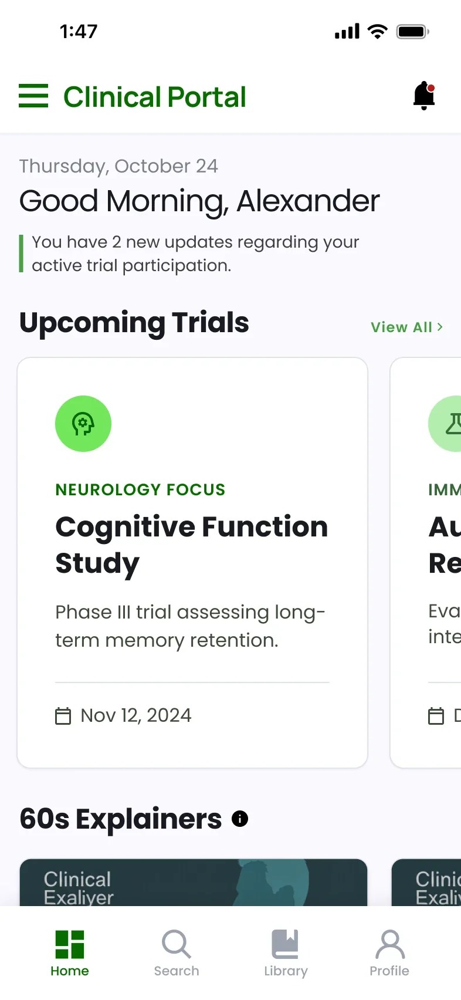
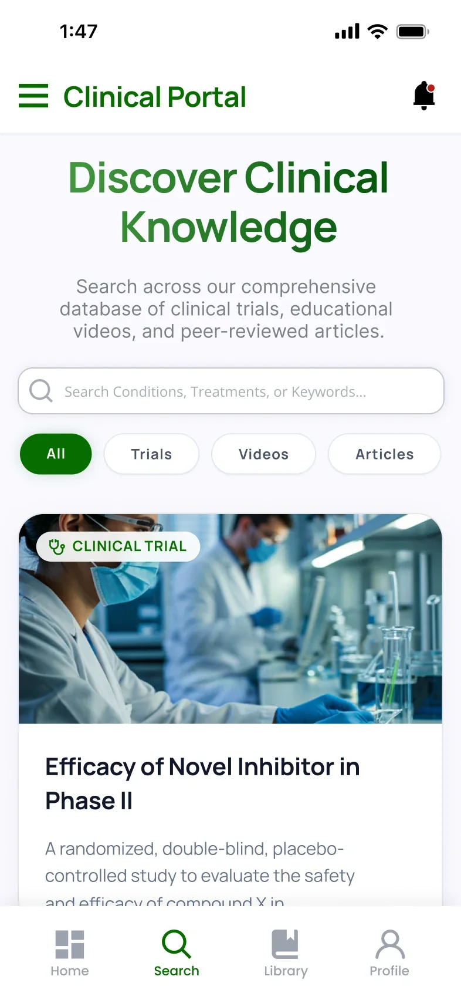
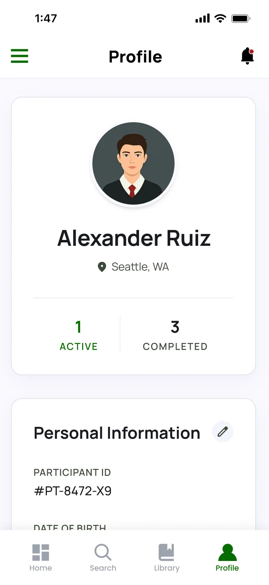
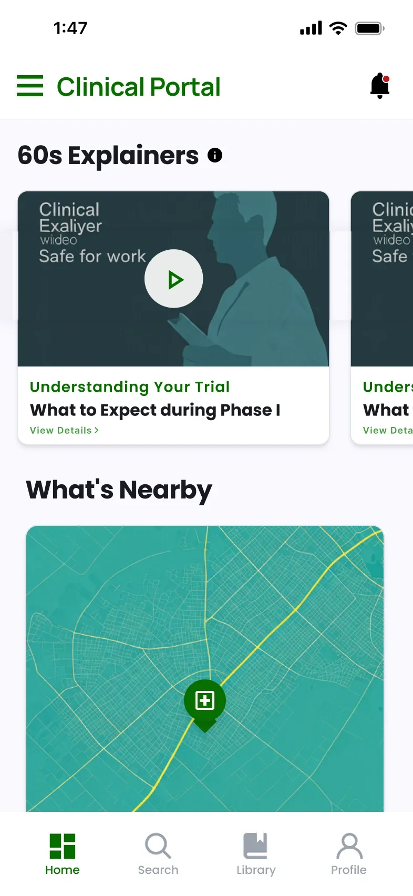
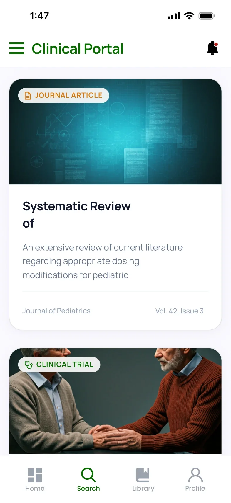
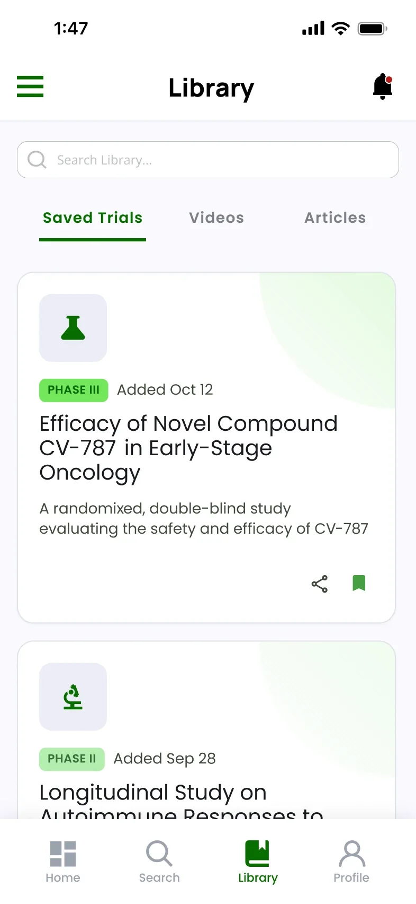
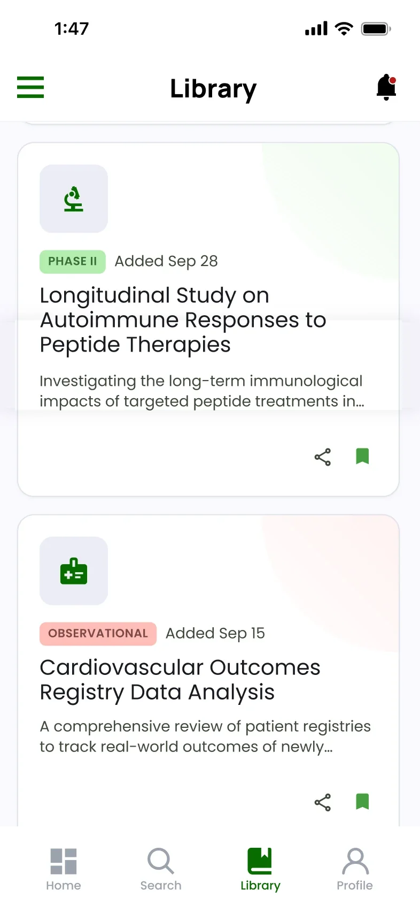
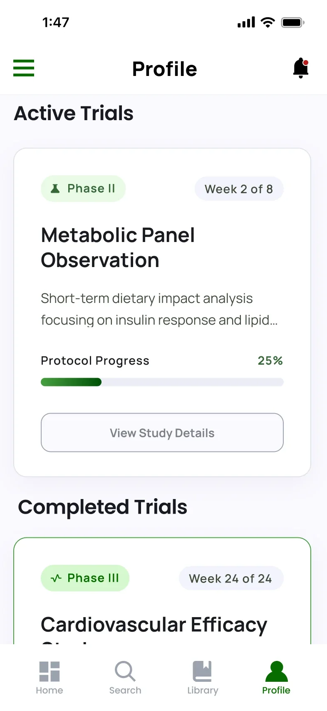
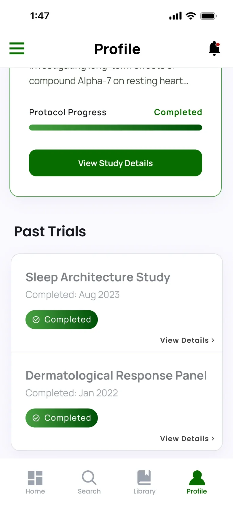

UX Research / Product Design
Cura
Making clinical trials accessible for everyone.
A clinical-trial app concept that helps people of color find trials they may qualify for and understand what joining would involve. Made with a four-person team for DTX 499.
Academic concept, not a real clinical service
- My Role
- Product Designer & Researcher
- Team
- Sebastian, Misha, Shivam & Laura
- Timeline
- January – May 2026
- Tools
- Figma

Overview
The Problem
People of color are underrepresented in clinical trials because of mistrust, cost, medical jargon and a lack of information. Trials aren’t designed with every community in mind, so misinformation spreads and participation stays low.
The Redesign
Cura, a trial match and readiness app. It matches people to relevant trials in plain language, explains what joining would involve with 60-second videos and articles, and lets them save everything to come back to, or share with family, before deciding.
My Role
Shivam and I were the product designers: we built the app’s structure, screens and prototype in Figma, and also worked on the research, including the affinity diagram I made from our findings. Misha and Laura focused on the research and created the brand guidelines and design system the app is built on.
Process
From research on who gets left out of trials to an app concept, then a small pilot test.
-
Research
Start With Who Gets Left Out.
Our secondary research looked at trust, representation, geography, cost and how people are recruited. Three numbers shaped the project:
67%
of FDA-reported medical device injuries or deaths involved women, because devices are often designed around male bodies.
40.8M
adults in the U.S. (12.5%) live in clinical trial “deserts,” far from the hospitals that run trials.
39% vs 5.7%
enrollment when community advisory members help recruit, compared with recruitment without them.
-
Synthesis
Four Groups, Three Insights.
I sorted every finding into an affinity diagram with four groups: minority patients, non-minority patients, hospitals and staff, and external groups like community leaders and AI tools. Three insights came out of it.
-
Patients & communities
Trust
Key insightMistrust runs deep, from the Tuskegee study to pain being dismissed. People trust other people, not portals: community peers raise enrollment from 5.7% to 39%.
-
Barriers
Access
Key insightCost, distance and language decide who can join. Travel costs and lost wages, trial deserts and language barriers keep eligible people out.
-
Hospitals / Staff
Family
Key insightHealth decisions are made with family, but recruitment ignores that. People need plain-language information they can share before deciding.
-
Bias in care
Devices and tests are built around male, lighter-skinned bodies: pulse oximeters misread darker skin.
-
Staff
Dedicated trial staff recruit best, but often lack training to reach minority communities.
-
Technology
AI cut recruitment time by 42% and found 35% more underrepresented eligible patients.
Overall Objective
How might we reduce cultural friction and socio-economic barriers so the clinical trial process is safe, easy to understand and welcoming, to increase engagement from people of color?
-
-
Exploration
Compare Four Ideas, Pick One.
We explored ideas for patients, families and doctors before choosing the one that could reach the most people without needing more staff.
Physician Training App
Simulations and real patient stories to build doctors’ empathy and trust with patients.
Family Consent Workshop
Community-led sessions that explain trials to whole families, with peer facilitators.
60-Second Explainers
Short, multilingual videos that cut the jargon and anxiety around trials.
- Chosen
Trial Match & Readiness App
Matches people to trials in plain language, with family sharing and explainers built in.
-
Design
Four Tabs, Plain Language.
We built the app’s structure from scratch around four tabs. Home shows upcoming trials, 60-second videos and a map of what’s nearby. Search filters across videos, trials and articles. Library keeps everything you’ve saved, and Profile holds your trials and personal information.
Navigation
- Home
- Trials
- 60s videos
- Map
- Search
- Filter
- Videos
- Trials
- Articles
- Library
- Saved
- Videos
- Trials
- Articles
- Profile
- Past trials
- Completed videos
- Personal info
Four tabs. Library gives people room to save information and decide later. - Home
-
Testing
Test the Video and the App.
We ran a small pilot with three students on campus, so the results aren’t representative of real trial participants. We tested how they responded to a short explainer video and how easily they could find information in the app.
2 of 3
were more willing to take part in a trial after watching the 60-second video.
2 of 3
found the screens easy to navigate.
Once a month
is how often two of them check a healthcare portal, so the app can’t rely on daily use.
Final Design
The finished app: a home for upcoming trials, search across trials and learning, and a profile to track it all.



Screen 1 of 3
Learning Comes First
60-second explainers and articles sit next to trials, so learning is a valid first step.
Room to Decide
Save trials and articles to the Library, share them with family and come back when ready.
The App, Screen by Screen
A walk through each part of the app.
-
Upcoming Trials 
Explainers & Map Home
Start the day with updates on active trials, upcoming trials, 60-second explainers and what’s nearby.
-
Search 
Results Search
Search conditions, treatments or keywords, then filter across trials, videos and peer-reviewed articles.
-

Saved Trials 
Share Library
Everything you save in one place, ready to share with family or come back to later.
-
Profile 
Active Trials 
Past Trials Profile
Track active, completed and past trials, with your participant ID and personal information.
Outcome & Reflection
What Was Delivered
A research synthesis, four concept directions, the Trial Match and Readiness app prototype in Figma, and a small pilot test of the explainer video and the app, presented May 5, 2026.
What Comes Next
Test with real members of underrepresented communities instead of friends on campus, refine navigation, language and onboarding with a larger group, and get feedback from campus health advisors and public health professors.